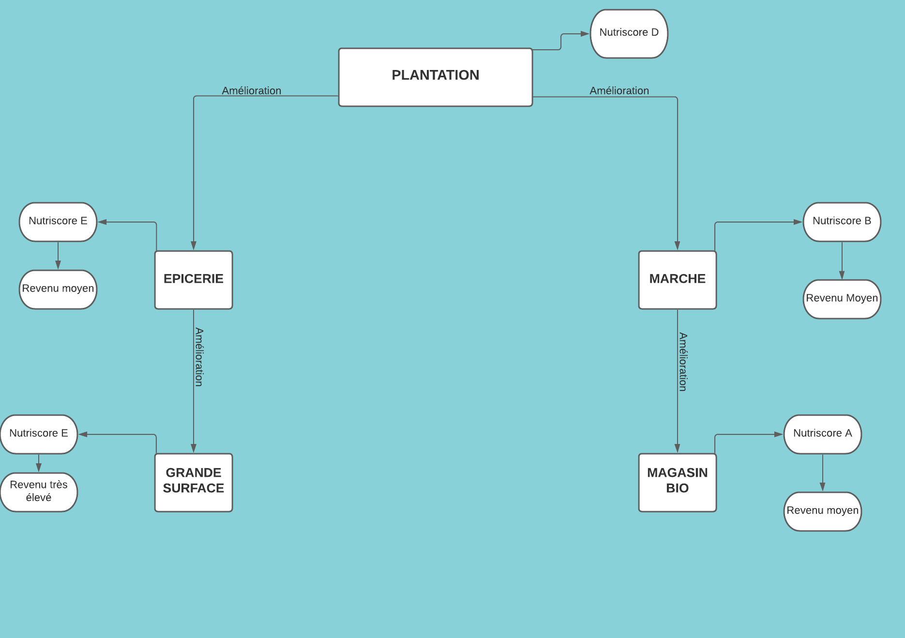

Comment gagner ?
Dans le Monopalim, il y a 4 façons différentes de gagner : - Posséder toute une ligne du plateau c’est gagné.
- Si vous possédez les quatres saisons, c’est gagné.
- Si vous êtes le dernier joueur “en vie” ou “non en faillite”, c’est gagné.
- Si au bout de 20 tours de plateau par un joueur, vous possédez la meilleure moyenne HealthyBar & Blé.
Comment gagner de la HealthyBar ?
La HealthyBar est une moyenne de vos statistiques physiques parmi : l’IMC , rapport entre fréquence cardiaque aérobique et pulsation par minute soit FCA / PULS et enfin le nutriscore moyen des propriétés.
La HealthyBar est initialisée à 50.
Comment gagner du Blé ?
Chaque tour de plateau vous octroie 400 B, le double si vous tombez sur la case départ. Les cartes Chance, Caisse de communauté et Questions peuvent également vous en faire gagner. Si un autre joueur que vous tombe sur l’une de vos propriétés, il devra vous verser un montant dépendant du type de propriété et de son grade.
Qui joue en premier ?
L’ordre sera déterminé au hasard avec le jeu.
Quand c’est votre tour :
- Vous pouvez modifier vos propriétés (Augmentation de grade, changement de terrain, achat / échange / revente...)
- Une fois complétée vous pouvez lancer les dés.
- En fonction de la case sur laquelle vous vous arrêtez vous devrez, dans la plupart des cas effectuer une action.
- Si vous avez fait un double, vous rejouez. Si jamais vous effectuer 3 doubles à la suite vous allez directement à la case diète et ce pour une durée de 3 tours de jeu et votre tour s’arrête.
- Dès que votre tour est fini, la main passe au joueur suivant.
Nom du jeu : MONOPALIM
Monnaie du jeu : le Blé (B)
Chaque joueur possède une barre de vie appelée HealthyBar
Les gares sont remplacées par les Saisons.
- Mode local
- Mode multijoueur
- Créer une partie en multijoueur sur un serveur privé
- Une page de score pour chaque joueur
- Page des magnifiques créateurs du jeu !
Il existe 2 types de propriétés :
Terrain
- Vous pouvez acheter la propriété sur laquelle vous vous arrêtez en payant le prix indiqué sur la case. Vous recevrez en échange, comme preuve de cette acquisition, une carte de propriété.
- Lorsque vous achetez des propriétés, vous devez penser à acheter, si possible, les autres propriétés de la même ligne, ou autrement dit de la même saison.
Saison
Propriétés d'un autre joueur :
Si vous vous arrêtez sur une propriété qui appartient à un autre joueur, vous devez payer un loyer. Le montant du loyer est indiqué sur le titre de propriété et varie selon le grade du terrain.
Attention, il est également possible de racheter le terrain de l’adversaire, au double de sa valeur !
Aller en Diète : Rendez-vous au “Centre diététique”, sans toucher votre salaire de 200 B. Pour sortir, vous devez répondre à une question ou disposez d'une carte CheatMeal
Visite du centre / Centre diététique : Si vous n’êtes pas en diète, vous passerez par la case visite du centre. Cette case n’a aucun impact sur votre vie de joueur, elle vous sert juste à observer ceux qui se sont laissés aller. Si vous êtes en diète, vous serez dans la case juste à côté en centre diététique.
Panier Garni : Vous gagnez tout l’argent du milieu de plateau et diminuer votre pulsation cardiaque de 20 !
Case départ : Dès que vous passez par cette case vous gagnez 200 B. Si vous vous arrêtez dessus, vous gagnez le double : 400 B.
S’il ne vous reste plus d’argent et que vous devez payer un joueur / une dette, vous devez vendre une propriété.
Vous ne pouvez construire que lors de votre tour de jeu.
Les terrains peuvent être rétrogradés et / ou vendus pour la moitié de leur valeur.
Lors des améliorations, il est impossible de passer de la colonne marché à la case épicerie, marché à grande surface etc.... . Dès qu’une branche est choisie elle doit être poursuivie jusqu’à la fin ou la rétrogradation du terrain.
